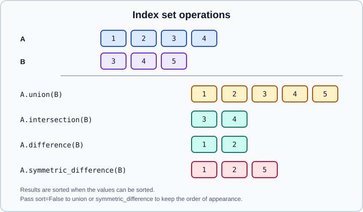

Index Objects
|
This content was generated with the assistance of AI and should be verified against the official documentation before being relied on in production. |
Every Series and every axis of a DataFrame has an Index: an immutable, ordered sequence of labels that pandas uses
to look values up, to align objects with each other and to name rows and columns. Understanding the Index explains most
of the surprises in selection and arithmetic.
This page targets pandas 3.1 (3.1.0 was released on 22 October 2026) on Python 3.13 or 3.14; pandas 3.1 supports
Python 3.11 and requires NumPy 2.0.2 or later. Every example was run on pandas 3.1.0, NumPy 2.5.4 and Python 3.13, and
the output shown is real. Examples assume import numpy as np and import pandas as pd. Related pages:
Series, DataFrame,
MultiIndex, Duplicate Labels & Rows,
Time Series & Dates and
Indexing & Selecting.
What an Index is
import numpy as np
import pandas as pd
i = pd.Index(["b", "a", "c", "a"], name="k")
print(i)
print(i.dtype, i.name, i.is_unique, i.has_duplicates, i.is_monotonic_increasing, len(i), i.shape, i.nlevels, i.hasnans)
print(pd.Index([1, 2, 3]), pd.Index([1.5, 2.5]), pd.Index([True, False]), pd.Index([1, 2], dtype="int32"))Index(['b', 'a', 'c', 'a'], dtype='str', name='k')
str k False True False 4 (4,) 1 False
Index([1, 2, 3], dtype='int64') Index([1.5, 2.5], dtype='float64') Index([True, False], dtype='bool') Index([1, 2], dtype='int32')Properties to know:
-
An
Indexis one-dimensional and hashable, which makes label lookup fast (a hash table that pandas builds on first use). -
It may contain duplicates. Uniqueness is a property you can test (
is_unique) or enforce (set_flags), not a guarantee. -
It has an optional
name. Frames also name their column index:df.columns.name. -
It has a dtype: the dtype of its values, with no special subclass for it.
The dtype of the index
The Index takes the dtype of the labels it is built from. In pandas 3, strings are str:
print(pd.Index(list("abc")).dtype) # str
print(pd.Index(["a", 1]).dtype) # object (mixed types)
print(pd.Index([1, None]).dtype) # float64 (None becomes NaN)
print(pd.Index([1, 2, 3], dtype="Int64")) # Index([1, 2, 3], dtype='Int64') nullable integer indexSince pandas 2.0 there are no Int64Index, UInt64Index or Float64Index classes: they were removed, and
pd.Index([1, 2, 3]) is simply an Index with int64 dtype. Old code that calls pd.Int64Index(...) fails with
AttributeError. pd.api.types.is_string_dtype(index) is the portable test for a string index (index.dtype == object
is False for str).
RangeIndex
The default index of a Series or DataFrame that you did not label is a RangeIndex: a start, stop and step, stored
without materialising the labels.
r = pd.RangeIndex(0, 10, 2)
print(r, r.start, r.stop, r.step, r.to_numpy())
print(pd.Series([1, 2]).index, pd.DataFrame({"a": [1]}).index)
print(r[1:3]) # RangeIndex(start=2, stop=6, step=2)
big = pd.Index(np.arange(1_000_000))
print(big.memory_usage(), pd.RangeIndex(1_000_000).memory_usage()) # 8000000 132RangeIndex(start=0, stop=10, step=2) 0 10 2 [0 2 4 6 8]
RangeIndex(start=0, stop=2, step=1) RangeIndex(start=0, stop=1, step=1)
RangeIndex(start=2, stop=6, step=2)
8000000 132A RangeIndex uses a constant amount of memory (132 bytes for a million labels instead of 8 MB). Operations such as
slicing keep it a RangeIndex; operations that cannot be expressed as a range (insert of an arbitrary label, reordering)
return an ordinary Index.
Immutability
You can replace the whole index of an object, but you cannot change one label in place:
i = pd.Index(["b", "a", "c"])
try:
i[0] = "z"
except TypeError as e:
print(type(e).__name__, e) # TypeError Index does not support mutable operations
n = pd.Index([1, 2, 3])
print(n.values.flags.writeable) # False: Index.values is read-only since pandas 3.1
print(n.to_numpy().flags.writeable) # FalseBecause an Index never changes, several objects can share the same instance safely. To "change" an index, build a new
one with rename, map, insert, delete, drop or where, and assign it to obj.index/obj.columns or pass it to
set_axis.
Looking up labels
j = pd.Index(["a", "b", "c"])
print(j.get_loc("b"), "b" in j) # 1 True
print(j.get_indexer(["c", "z", "a"])) # [ 2 -1 0] -1 means "not found"
print(j.get_indexer_for(["b"])) # [1]1 True
[ 2 -1 0]
[1]-
get_loc(label)returns an integer position for a unique label, a slice for a monotonic duplicated label, or a boolean mask for a non-monotonic duplicated one. It raisesKeyErrorif the label is missing. -
get_indexer(targets)returns an array of positions with-1for missing targets. It requires a unique index (InvalidIndexError: Reindexing only valid with uniquely valued Index objectsotherwise);get_indexer_foralso works with duplicates and returns all matching positions. -
intests labels only, never values.
dj = pd.Index(["a", "b", "a"])
print(dj.get_loc("a"), dj.get_loc("b")) # [ True False True] 1
print(dj.get_indexer_for(["a"])) # [0 2]For a sorted numeric or datetime index, approximate matching is built in:
m = pd.Index([10, 20, 30, 40])
print(m.get_indexer([25, 31], method="nearest")) # [2 2]
print(m.get_indexer([25], method="pad")) # [1] last label <= target (forward fill)
print(m.get_indexer([25], method="backfill")) # [2] first label >= target
print(m.searchsorted(25), m.slice_indexer(15, 35)) # 2 slice(1, 3, None)method accepts "pad"/"ffill", "backfill"/"bfill" and "nearest", plus tolerance= to limit the distance. The same
parameters appear on Series.reindex and merge_asof.
Set operations
Indexes behave like ordered sets of labels.

a = pd.Index([1, 2, 3, 4])
b = pd.Index([3, 4, 5])
print(a.union(b), a.intersection(b), a.difference(b), a.symmetric_difference(b), sep="\n")
print(pd.Index([3, 1, 2]).union(pd.Index([2, 5]))) # sorted: [1, 2, 3, 5]
print(pd.Index([3, 1, 2]).union(pd.Index([2, 5]), sort=False)) # appearance order: [3, 1, 2, 5]
print(pd.Index(["x", "y"]).union(pd.Index([1, 2]))) # mixed types become objectIndex([1, 2, 3, 4, 5], dtype='int64')
Index([3, 4], dtype='int64')
Index([1, 2], dtype='int64')
Index([1, 2, 5], dtype='int64')
Index([1, 2, 3, 5], dtype='int64')
Index([3, 1, 2, 5], dtype='int64')
Index(['x', 'y', 1, 2], dtype='object')The same operators exist as methods on alignment (join) and for selection:
df.loc[df.index.intersection(other.index)] selects the common rows without raising for missing labels, whereas
df.loc[other_labels] raises KeyError when some are absent.
Other everyday methods
| Method | Behaviour |
|---|---|
|
return a new Index with labels added or removed |
|
deduplicate and detect repeats ( |
|
sorted labels, the permutation, or both |
|
membership, equal labels, equal labels and attributes (name) |
|
elementwise and conversion helpers |
|
summaries |
|
conversion |
Arithmetic and comparisons on an Index (index + 1, index > 2, np.log(index)) work and return an Index or a boolean
array. An Index of strings supports the .str accessor, a DatetimeIndex the .year, .month, .day_name()
attributes and methods.
a = pd.Index([1, 2, 3, 4])
print(a.map(lambda v: v * 10), a.astype("float64"), a.rename("z"), a.where(a > 2), sep="\n")
print(a.equals(pd.Index([1, 2, 3, 4])), a.identical(pd.Index([1, 2, 3, 4], name="n")))
print(a.drop([1, 2]), a.delete(0), a.insert(1, 99), sep="\n")Index([10, 20, 30, 40], dtype='int64')
Index([1.0, 2.0, 3.0, 4.0], dtype='float64')
Index([1, 2, 3, 4], dtype='int64', name='z')
Index([nan, nan, 3.0, 4.0], dtype='float64')
True False
Index([3, 4], dtype='int64')
Index([2, 3, 4], dtype='int64')
Index([1, 99, 2, 3, 4], dtype='int64')Note where: labels where the condition is false become NaN, which turns an integer index into float64.
Using an Index: set_index, reset_index and rename_axis
Real tables have a column that identifies the rows. set_index promotes columns to the index; reset_index is the inverse.
df = pd.DataFrame({"id": [1, 2, 3], "name": ["a", "b", "c"], "v": [0.1, 0.2, 0.3]})
d2 = df.set_index("id")
print(d2)
print(d2.reset_index())
print(d2.reset_index(drop=True))
print(df.set_index(["id", "name"]).index) name v
id
1 a 0.1
2 b 0.2
3 c 0.3
id name v
0 1 a 0.1
1 2 b 0.2
2 3 c 0.3
name v
0 a 0.1
1 b 0.2
2 c 0.3
MultiIndex([(1, 'a'),
(2, 'b'),
(3, 'c')],
names=['id', 'name'])-
set_index(keys, drop=True, append=False, verify_integrity=False):drop=Falsekeeps the column as well,append=Trueadds a level to the existing index, a list of keys builds aMultiIndex, andverify_integrity=TrueraisesValueError: Index has duplicate keyswhen labels repeat. -
reset_index(level=None, drop=False, names=None): moves the index back to column(s), named after the index name (orindex/level_0when unnamed);drop=Truediscards it. -
rename_axis("ident")names the row index andrename_axis(columns="field")the column index. Unnamed indexes produce columns calledindexafterreset_index. -
set_indexandreset_indexacceptinplace=True, but it is deprecated in pandas 3.1 (see DataFrame).
Whether to put data in the index is a design choice. Index lookups are fast and alignment is automatic, but index
columns do not take part in describe, vectorised column arithmetic or most machine-learning input. A common rule:
use set_index for time and identifier keys you will join or slice by, and keep everything else as columns.
Reindexing and alignment
reindex conforms an object to a new set of labels: existing labels keep their values, new labels get NaN or a
fill_value, and labels missing from the new index are dropped.
s = pd.Series([1, 2, 3], index=["a", "b", "c"])
print(s.reindex(["c", "a", "d"]))
print(s.reindex(["c", "a", "d"], fill_value=0))
x = pd.Series([1, 2, 3], index=[0, 5, 10])
print(x.reindex(range(11), method="ffill").tolist()) # [1, 1, 1, 1, 1, 2, 2, 2, 2, 2, 3]
print(s.reindex_like(pd.Series(0, index=["b", "a"])))c 3.0
a 1.0
d NaN
dtype: float64
c 3
a 1
d 0
dtype: int64
[1, 1, 1, 1, 1, 2, 2, 2, 2, 2, 3]
b 2
a 1
dtype: int64Note the dtype: a NaN forces float64, whereas fill_value=0 keeps int64. reindex also accepts columns= for
frames, method="ffill", "bfill" or "nearest" for monotonic indexes and limit=, tolerance= to bound the filling.
Reindexing is not the same as loc with a list: loc raises KeyError for labels that do not exist.
Arithmetic between objects is reindex to the union of the two indexes followed by the operation (see
Series). a.align(b, join="inner") returns the two objects conformed to the
intersection; join accepts "outer" (default), "inner", "left" and "right".
Duplicate labels
dups = pd.Series([1, 2, 3], index=list("aab"))
print(dups.loc["a"]) # two rows
print(dups.loc["b"]) # 3
print(dups[~dups.index.duplicated(keep="first")]) # keep the first of each label
print(dups.groupby(level=0).sum()) # aggregate by labela 1
a 2
dtype: int64
3
a 1
b 3
dtype: int64
a 3
b 3
dtype: int64A duplicated label is allowed but makes operations ambiguous: reindex and get_indexer fail, and alignment repeats
the label in the result (adding a Series indexed ["a", "a"] to one indexed ["a", "b"] returns rows a: 2.0, a: 3.0 and
b: NaN). To prevent them from the start:
obj.set_flags(allows_duplicate_labels=False) raises DuplicateLabelError when a later operation would create one.
See Duplicate Labels & Rows.
Label slicing: sorted versus unsorted
A label slice s.loc["b":"d"] is inclusive at both ends. On a sorted index it selects all labels between the two.
On an unsorted index pandas locates the two end labels and slices between their positions, which gives a different
result:
u = pd.Series(range(5), index=list("abcde"))
print(u.loc["b":"d"].tolist(), u.iloc[1:3].tolist()) # [1, 2, 3] [1, 2]
unsorted = pd.Series(range(4), index=list("bdac"))
print(unsorted.loc["a":"c"].tolist()) # [2, 3] (positions 2 to 3)
print(unsorted.sort_index().loc["a":"c"].tolist()) # [2, 0, 3]On an unsorted index with a missing end label a slice raises KeyError ("Cannot get right slice bound for non-monotonic index"); sort the index first (sort_index()) whenever you
slice by labels. is_monotonic_increasing tells you if the index is already sorted.
Specialised index types
The same Index API exists on subclasses that add type-specific behaviour.
| Class | Holds | Created with |
|---|---|---|
|
integer ranges |
|
|
timestamps ( |
|
|
spans of time at a fixed frequency |
|
|
durations |
|
|
closed or open intervals |
|
|
labels with a fixed set of categories |
|
|
tuples, several levels |
|
print(pd.date_range("2026-10-01", periods=3))
print(pd.period_range("2026-01", periods=3, freq="M"))
print(pd.interval_range(0, 3))
print(pd.MultiIndex.from_product([["a", "b"], [1, 2]], names=["l", "n"]))DatetimeIndex(['2026-10-01', '2026-10-02', '2026-10-03'],
dtype='datetime64[us]', freq='D')
PeriodIndex(['2026-01', '2026-02', '2026-03'], dtype='period[M]')
IntervalIndex([(0, 1], (1, 2], (2, 3]], dtype='interval[int64, right]')
MultiIndex([('a', 1),
('a', 2),
('b', 1),
('b', 2)],
names=['l', 'n'])Index dtype resolution matters when you merge or compare: the default DatetimeIndex resolution is microseconds since
pandas 3.0, so astype("int64") of its values is 1000 times smaller than the nanosecond-based numbers in older code.
Frequency aliases follow the pandas 3 spelling (ME, QE, YE, h, min, s); see
Resampling & Frequencies.
Pitfalls
-
Alignment is by label, not position. Two Series with the same values but different indexes add up to
NaN. If you want positional behaviour, callreset_index(drop=True)on both or useto_numpy(). -
Unique versus not.
locreturns a scalar for a unique label and a Series for a repeated one: the return type depends on the data. -
Integer indexes make
[]a label lookup. After filtering or sorting the labels no longer match positions: use.ilocfor positions. -
Float labels. Indexes of floats compare exactly;
pd.Index([0.1 + 0.2]).get_indexer([0.3])returns-1because0.1 + 0.2is not exactly0.3. Use rounded or integer keys. -
A big
Indexis mutable only by replacement. There is no.appendon an existing frame’s index; build and assign. -
Sort before slicing by label (see above) and sort a
MultiIndexbefore slicing it.
Outdated statements in older books and tutorials
| Older text says | In pandas 3.1 | Changed |
|---|---|---|
|
removed; a plain |
2.0 (April 2023) |
|
removed; use |
2.0 |
String indexes have dtype |
dtype |
3.0 (January 2026) |
|
microsecond by default for parsed strings |
3.0 |
|
read-only |
3.1 |
|
still valid (replaces the index), but |
unchanged |
|
removed; use |
long removed |
References
-
pandas API reference, Index objects: https://pandas.pydata.org/docs/reference/indexing.html
-
pandas.IndexAPI reference: https://pandas.pydata.org/docs/reference/api/pandas.Index.html -
pandas.RangeIndexAPI reference: https://pandas.pydata.org/docs/reference/api/pandas.RangeIndex.html -
pandas user guide, indexing and selecting data: https://pandas.pydata.org/docs/user_guide/indexing.html
-
pandas user guide, essential basic functionality (reindexing and altering labels): https://pandas.pydata.org/docs/user_guide/basics.html
-
pandas user guide, duplicate labels: https://pandas.pydata.org/docs/user_guide/duplicates.html
-
pandas user guide, migrating to pandas 3: https://pandas.pydata.org/docs/user_guide/migration.html
-
pandas release notes 2.0.0, 3.0.0 and 3.1.0: https://pandas.pydata.org/docs/whatsnew/v2.0.0.html, https://pandas.pydata.org/docs/whatsnew/v3.0.0.html and https://pandas.pydata.org/docs/whatsnew/v3.1.0.html